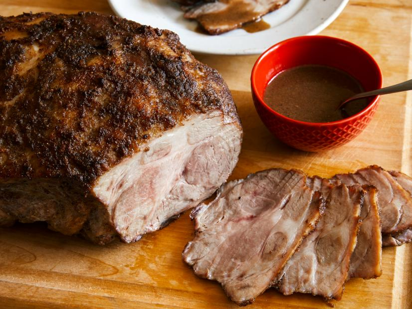
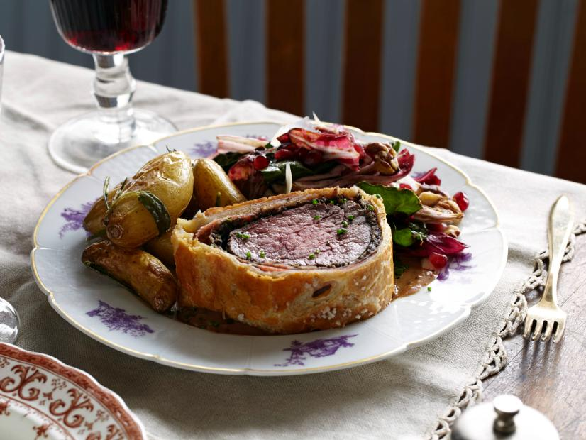
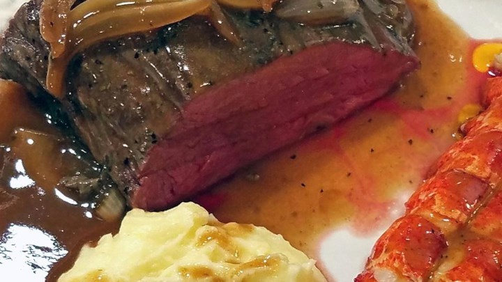

Slow-Roasted Pork Shoulder

| Ingredients | Quantity |
| Black Peppercorns |
2 Tbsp |
| 25 cloves of garlic |
2 heads (peeled) |
| Whole cloves | 10 cloves |
| Vegetable oil | 3/4 cup |
| Bone-in pork shoulder |
1 (about 7 pounds) |
| Kosher salt | As needed |
| White distilled vinegar | As needed |
Preptime: 15 minutes
Cooktime: 5 hr 30 min
Directions
- Preheat the oven to 275 degrees F.
- In a food processor, combine the peppercorns, garlic, and cloves and puree. While the motor is running, drizzle in the oil until a paste is formed. Using a rubber spatula, scrape the garlic paste into a small bowl.
- Place the pork butt on a work surface and season all over generously with salt. Rub all over with the garlic paste. Place in an oven-safe roasting bag and close with a twist tie. Place in a large roasting pan, and cook until tender, about 5 hours.
- Remove roast from the oven. Slip the oven-roasting bag off the meat and discard. Transfer the cooking liquid to a medium saucepan. Skim the fat from the cooking liquid with a ladle or de-greaser. Bring to a boil, lower the heat, and simmer to thicken the juices slightly.
- Raise the oven to 400 degrees F. Return the pork, in the roasting pan, to the oven. Continue roasting, basting frequently with the simmering cooking liquid, until well- browned, about 30 minutes. If there is any cooking liquid left, pour it over the pork.
- Remove pork from the oven and let it rest at room temperature for 10 minutes. With the pork drippings you may make a vinegar sauce using this formula: for every 1/2 cup of drippings, whisk with 3 tablespoons vinegar and 1/4 teaspoon salt. Either carve the pork into thin slices, or, using 2 forks, pull into small pieces. Serve with the vinegar sauce on the side.
The Ultimate Beef Wellington

| Ingredients | Quantity |
| White button Mushrooms |
3 pints (1 1/2 pounds) |
|
Shallots (peeled and roughly chopped) |
2 shallots |
|
Cloves of garlic (peeled and roughly chopped) |
4 cloves |
|
Fresh thyme (leaves only) |
2 springs |
| Unsalted butter | 2 Tbsp |
| Extra-virgin olive oil | 2 Tbsp |
| Kosher salt | As needed |
| Freshly ground black pepper | As needed |
Preptime: 1 hour
Cooktime: 6 hours
Directions
- For the Duxelles:
- To make the Duxelles: Add mushrooms, shallots, garlic, and thyme to a food processor and pulse until finely chopped. Add butter and olive oil to a large saute pan and set over medium heat. Add the shallot and mushroom mixture and saute for 8 to 10 minutes until most of the liquid has evaporated. Season with salt and pepper and set aside to cool.
- For the Beef:
- To prepare the beef: Tie the tenderloin in 4 places so it holds its cylindrical shape while cooking. Drizzle with olive oil, then season with salt and pepper and sear all over, including the ends, in a hot, heavy-based skillet lightly coated with olive oil - about 2 to 3 minutes. Meanwhile set out your prosciutto on a sheet of plastic wrap (plastic needs to be about a foot and a half in length so you can wrap and tie the roast up in it) on top of your cutting board. Shingle the prosciutto so it forms a rectangle that is big enough to encompass the entire filet of beef. Using a rubber spatula cover evenly with a thin layer of duxelles. Season the surface of the duxelles with salt and pepper and sprinkle with fresh thyme leaves. When the beef is seared, remove from heat, cut off twine and smear lightly all over with Dijon mustard. Allow to cool slightly, then roll up in the duxelles covered prosciutto using the plastic wrap to tie it up nice and tight. Tuck in the ends of the prosciutto as you roll to completely encompass the beef. Roll it up tightly in plastic wrap and twist the ends to seal it completely and hold it in a nice log shape. Set in the refrigerator for 30 minutes to ensure it maintains its shape.
- Preheat oven to 425 degrees F.
- On a lightly floured surface, roll the puff pastry out to about a 1/4-inch thickness. Depending on the size of your sheets you may have to overlap 2 sheets and press them together. Remove beef from refrigerator and cut off plastic. Set the beef in the center of the pastry and fold over the longer sides, brushing with egg wash to seal. Trim ends if necessary then brush with egg wash and fold over to completely seal the beef - saving ends to use as a decoration on top if desired. Top with coarse sea salt. Place the beef seam side down on a baking sheet.
- Brush the top of the pastry with egg wash then make a couple of slits in the top of the pastry using the tip of a paring knife ¿ this creates vents that will allow the steam to escape when cooking. Bake for 40 to 45 minutes until pastry is golden brown and beef registers 125 degrees F on an instant-read thermometer. Remove from oven and rest before cutting into thick slices. Garnish with minced chives, and serve with Green Peppercorn Sauce, Roasted Fingerling Potatoes with Fresh Herbs and Garlic, and Warm Wilted Winter Greens.
- Green Pepper corn sauce: Add olive oil to pan after removing beef. Add shallots, garlic, and thyme; saute for 1 to 2 minutes, then, off heat, add brandy and flambe using a long kitchen match. After flame dies down, return to the heat, add stock and reduce by about half. Strain out solids, then add 2 cups cream and mustard. Reduce by half again, then shut off heat and add green peppercorns.
- Roasted Fingerling Potatoes with Fresh Herbs and Garlic: Preheat oven to 500 degrees F and place a baking sheet inside to heat.
- Add potatoes, rosemary, sage, thyme, and garlic to a medium bowl. Drizzle with olive oil, and season with salt and pepper. Remove sheet pan from oven, lightly coat with olive oil, and pour potatoes onto pan. Place potatoes in oven and reduce heat to 425 degrees F. Roast for 20 minutes , or until crispy on outside and tender on inside.
- Warm Wilted Winter Greens: Cook honey and balsamic together over medium-high heat in a large saute pan, about 5 minutes. Toast walnuts in a small skillet; set aside to cool.
- Pile greens on a platter. Stir mustard into balsamic-honey dressing, then whisk in about 1 cup extra-virgin olive oil; pour over greens. Season greens with salt and pepper and garnish with walnuts, pomegranate seeds, shavings of Parmesan, and shallot.
Fabulous beef tenderloin

| Ingredients | Quantity |
| Beef tenderloin roast |
1 roast (3 pounds) |
| Soy sauce | 3/4 cup |
| Melted Butter | 1/2 cup |
Preptime: 5 minutes
Cooktime: 45 minutes
Directions
- Preheat oven to 350 degrees F (175 degrees C).
- Place roast into a shallow, glass baking dish. Pour soy sauce and melted butter over the tenderloin.
- Bake in preheated oven for 10 minutes, then turn the roast over, and continue cooking 35 to 40 minutes, basting occasionally until the internal temperature of the roast is at 140 degrees F (60 degrees C) for medium. Or, cook to your desired degree of doneness. Let meat rest for 10 to 15 minutes before slicing.